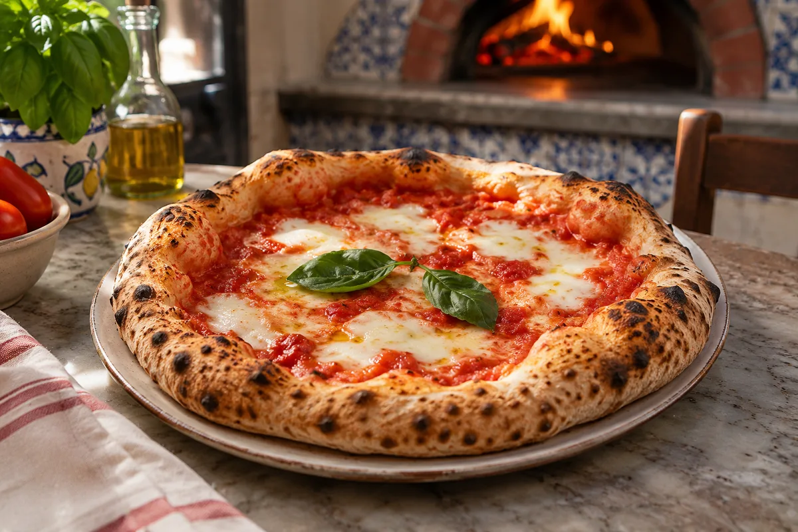

PANE E PIZZA · FASE 3 · 19 NOVEMBRE 2026
Pizza alla napoletana con pasta madre: il metodo, le dosi e la cottura
Un disco sottile al centro, un bordo soffice, ingredienti misurati e nessun mattarello. Per questa ricetta usiamo il LI.CO.LI. maturo — il lievito in coltura liquida — consentito dal disciplinare dell'Associazione Verace Pizza Napoletana (AVPN). Ti accompagno dalla bilancia al forno, spiegando dove la cucina di casa può discostarsi dal disciplinare.

300 g farina di grano tenero tipo 00 o 0 + 170 g acqua + 25 g LI.CO.LI. maturo + 8 g sale = 503 g di impasto.
Riposo e fermentazione complessivi: circa 24 ore a 20–22 °C come programma di riferimento. La madre deve essere attiva: se non lo è, i tempi potrebbero non bastare.
Il lievito madre è l'8,3% dei 300 g di farina aggiunta: sotto il limite AVPN del 10%. Considerando anche l'acqua e la farina già presenti nel LI.CO.LI., l'idratazione totale è circa 58%.
1. Prepara ingredienti e strumenti
Usa farina tipo 00 o 0 adatta a una fermentazione lunga (per esempio una farina da pizza con forza intorno a W 260–300, se il produttore riporta questo dato). Servono una bilancia digitale, una ciotola, una spatola, un termometro per la stanza, due contenitori alimentari con coperchio, una pala e un forno adatto alla cottura scelta.
Il LI.CO.LI. deve raddoppiare regolarmente in 6–8 ore dopo il rinfresco. Non prendere 25 g da un barattolo appena uscito dal frigorifero se la coltura non ha recuperato forza. L'impasto non prevede olio, zucchero, miele o lievito di birra: l'olio andrà soltanto sul condimento.
2. L'impasto, cominciando dall'acqua
- Ore 18:00, giorno 1. Versa 170 g di acqua nella ciotola, sciogli 8 g di sale e aggiungi circa due cucchiai della farina già pesata. Mescola: in questo modo eviti il contatto prolungato diretto tra sale e lievito.
- Unisci 25 g di LI.CO.LI. maturo e distribuiscilo nel composto. Aggiungi gradualmente il resto dei 300 g di farina, senza aggiungerne altra a occhio. Mescola finché la farina è assorbita.
- Impasta per 10–15 minuti con movimenti di piega e pressione, finché ottieni un panetto uniforme, elastico, morbido ma non molle. Se si strappa subito, fermati 10 minuti e riprendi brevemente. Evita di scaldarlo eccessivamente con lavorazioni lunghe.
- Prima fermentazione (puntata). Copri la ciotola e lascia riposare per circa 2 ore a 20–22 °C, lontano da sole e fonti calde. L'impasto deve rilassarsi e cominciare a mostrare attività; non occorre raddoppiarlo.
- Ore 20:30 circa — Staglio. Versa sul banco appena infarinato, pesa due porzioni da circa 251–252 g. Per ogni porzione porta i lembi sotto e chiudi con delicatezza, ruotandola fino a ottenere una pallina liscia, con la giunzione in basso.
- Seconda fermentazione (appretto). Disponi le due palline separate in contenitori alimentari leggermente infarinati, coperti e abbastanza capienti. Lascia a 20–22 °C fino alle 18:00 del giorno 2, cioè per circa 21–22 ore. Devono essere più gonfie, con superficie distesa, morbide ma ancora maneggiabili.
Non mettere i panetti in frigorifero in questo programma AVPN: la temperatura controllata della cucina è parte del metodo. Se dopo il tempo previsto la pasta è ancora dura e poco cresciuta, attendi che maturi; non chiamare «conforme al disciplinare» un risultato che abbia dovuto superare i tempi di riferimento.
3. Il calendario da seguire
Se il LI.CO.LI. non è pronto alle 18:00: aspetta che raggiunga il suo picco e sposta l'intero calendario. I tempi sono una traccia pratica: il disciplinare AVPN 2024 indica 12–24 ore totali; una nota tecnica AVPN del 2026 osserva che con LI.CO.LI. possono essere necessarie almeno 24 ore. I due riferimenti non garantiscono lo stesso comportamento per ogni coltura domestica.
4. Stendi con le mani e prepara la Margherita
Per due pizze Margherita, prepara questi ingredienti: 140 g pomodori pelati schiacciati a mano (70 g per pizza), 180 g fior di latte tagliato a listarelle e ben scolato (90 g per pizza), 12–14 g olio extravergine (6–7 g per pizza), qualche foglia di basilico e, se gradito, 10 g di formaggio stagionato grattugiato (5 g per pizza). Sono quantità nell'intervallo del disciplinare AVPN per la Margherita.
- Ribalta delicatamente il primo panetto su pochissima farina. Con i polpastrelli premi il centro verso l'esterno, lasciando senza schiacciarlo un bordo di 1–2 cm. Non usare mattarello o pressa: spingeresti via il gas destinato al cornicione.
- Allarga il disco ruotandolo con le mani fino a circa 28–30 cm, senza strapparlo. Il centro deve restare sottile, nell'ordine di 2–3 mm. Se si ritira elasticamente, lascialo rilassare 5 minuti e riprendi con delicatezza.
- Metti il disco sulla pala appena infarinata. Distribuisci 70 g di pomodoro al centro senza sommergere il bordo; aggiungi 90 g di fior di latte, basilico, eventuale formaggio e 6–7 g d'olio a filo. Condisci senza soste lunghe, altrimenti la pasta si incolla alla pala.
- Fai scorrere la pizza sulla superficie di cottura e ripeti con il secondo panetto. Scuoti leggermente la pala prima di infornare: il disco deve muoversi senza trascinarsi il condimento.
Alternativa Marinara: per una pizza da un panetto usa 70–100 g pomodoro pelato, 6–8 g olio extravergine, uno spicchio d'aglio da circa 3 g e 0,5 g origano. Senza formaggio. Queste dosi seguono il riferimento AVPN per la Marinara.
5. Cottura: disciplinare AVPN e forno di casa
La pizza va direttamente sulla platea del forno, non in teglia. Il disciplinare 2024 indica una platea di circa 380–430 °C, volta intorno a 485 °C e un tempo di 60–90 secondi. Sono parametri che richiedono un forno adatto, controllato e con le caratteristiche previste dall'associazione.
Durante la breve cottura la pizza viene ruotata secondo necessità per dorare uniformemente il bordo. Deve uscire morbida e pieghevole, non asciutta come una focaccia.
Se hai soltanto un forno domestico da 250–300 °C: puoi preparare una pizza alla napoletana adattata, ma la cottura non rispetta il disciplinare AVPN. Metti una pietra o una piastra d'acciaio per pizza, se compatibile con il forno, nel ripiano alto-medio e preriscalda alla massima temperatura prevista dal costruttore per 45–60 minuti. Inforna una pizza sulla superficie calda: come punto di partenza, considera 5–8 minuti a 250 °C o meno se il forno arriva a 300 °C. Osserva spesso: il tempo dipende da pietra, acciaio e resistenze.
Quando il fondo è cotto e il bordo ben sviluppato, puoi usare brevemente il grill solo se consentito dal costruttore e restando davanti al forno. Non cercare i 60–90 secondi abbassando la sicurezza: un forno domestico non raggiunge le temperature di un forno da pizza professionale.
6. Se la pizza non riesce
- Il panetto non si distende e si ritira
- È ancora troppo tenace o freddo. Dagli alcuni minuti di riposo coperto, poi riprendi con i polpastrelli dal centro verso il bordo. Non forzare con il mattarello.
- Si allarga troppo e si strappa
- Può essere eccessivamente fermentato o indebolito. Controlla la temperatura reale delle 24 ore e non aspettare soltanto l'orologio. Per la prova successiva usa una farina adeguata alla fermentazione lunga.
- Il bordo non gonfia
- Il LI.CO.LI. potrebbe non essere maturo, oppure il bordo è stato schiacciato nella stesura. Controlla prima il raddoppio del lievito e non premere l'ultimo centimetro dell'impasto.
- La pizza è bagnata al centro
- Riduci l'acqua libera dei pelati, scola bene il fior di latte e non eccedere con il condimento. Nel forno di casa il tempo di cottura è più lungo e il risultato rimane diverso da quello del forno AVPN.
Le fonti e ciò che questa guida non certifica
Vuoi capire le tecniche che incontri in altre ricette? Leggi tangzhong, autolisi, biga e poolish: cosa sono e a cosa servono. Questa pizza usa il LI.CO.LI.; sostituirlo con un altro preimpasto richiede di ricalcolare la formula.
- Associazione Verace Pizza Napoletana, Disciplinare 2024: formula con lievito madre sotto il 10% della farina, impasto diretto, panetti, stesura, condimenti e temperature del forno.
- AVPN, I lieviti in pizzeria, 25 maggio 2026: uso del LI.CO.LI. e tempi indicativi che possono richiedere almeno 24 ore.
- Regolamento (UE) 97/2010, allegato II e regolamento di esecuzione (UE) 2022/2313: disciplina europea della «Pizza Napoletana» STG, distinta da AVPN.
La ricetta per due panetti da circa 251 g è un adattamento originale in piccola scala; gli orari sono esemplificativi e la fermentazione effettiva va osservata. Non è stata eseguita o documentata una prova pratica, una certificazione AVPN o STG né una revisione tecnica indipendente. Fonti ricontrollate il 19 novembre 2026.
Prima: come creare il LI.CO.LI.
Leggi anche: pane semplice da 500 g